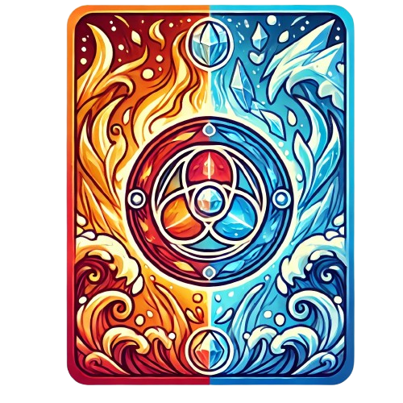

Jeu de Cartes - Elemental Ninja

Votre Carte
Carte de l'Ordinateur

Fire
Water
Ice
Fire
Water
Ice
Règles du Jeu :
Bienvenue dans notre jeu de cartes avec les éléments Fire, Water, et Ice ! Deux conditions de victoire peuvent vous faire remporter la partie. Le jeu s'arrête dès qu'un joueur remplit l'une de ces conditions.
- Avoir gagné 3 manches avec 3 fois le même élément et de couleurs différentes.
- Exemple : Si vous choisissez Fire, vous devez gagner : une manche avec Fire en Red, une autre avec Fire en Yellow, Une troisième avec Fire en Green.
- Avoir une carte de chaque élément et de couleurs différentes.
- Exemple : Vous devez avoir : une carte Fire en Red, une carte Water en Blue, une carte Ice en Purple.